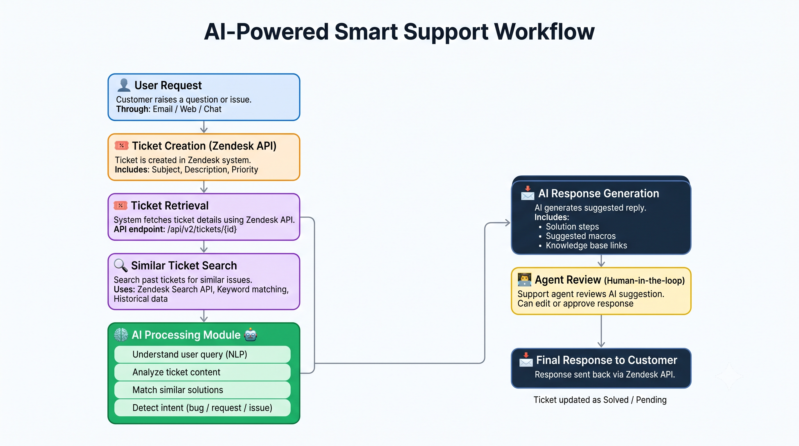

AI Workflow¶
Overview¶
The Smart Support Assistant uses Zendesk APIs to retrieve historical support information and assist users with accurate responses. Instead of directly answering a user's question, the AI searches for relevant support tickets, retrieves ticket details and comments, analyzes the information, and generates a response based on previous resolutions.
AI Workflow Diagram¶
The following diagram illustrates the AI-powered workflow used by the Smart Support Assistant.

Step 1 - Search Relevant Tickets¶
Purpose¶
Search Zendesk for tickets that are relevant to the user's question.
Input¶
- User question
- Keywords extracted from the question
API Used¶
Output¶
- Matching ticket IDs
- Ticket subjects
- Basic ticket information
Step 2 - Retrieve Ticket Details¶
Purpose¶
Retrieve complete information for each relevant ticket.
Input¶
- Ticket ID
API Used¶
Output¶
- Ticket Subject
- Description
- Status
- Priority
- Requester
- Assignee
- Tags
- Created Date
- Updated Date
Step 3 - Retrieve Ticket Comments¶
Purpose¶
Retrieve the conversation history of the selected ticket.
Input¶
- Ticket ID
API Used¶
Output¶
- Customer comments
- Agent replies
- Resolution steps
- Troubleshooting information
Step 4 - AI Response Flow¶
Purpose¶
Generate a helpful response using the collected ticket information.
AI Process¶
- Read ticket details.
- Read ticket comments.
- Understand the issue.
- Identify previous successful resolutions.
- Generate a clear response for the user.
Final Output¶
A natural-language response based on historical Zendesk support data.
Example Workflow¶
flowchart TD
A["User Question:<br/>How can I reset my password?"]
--> B["Search Relevant Tickets"]
--> C["Find Matching Tickets"]
--> D["Retrieve Ticket Details"]
--> E["Retrieve Ticket Information"]
--> F["Retrieve Ticket Comments"]
--> G["Read Previous Conversation<br/>and Resolution"]
--> H["AI Analysis"]
--> I["Generate Response Based on<br/>Previous Successful Resolutions"]
--> J["Final Response:<br/>1. Open the login page.<br/>2. Click 'Forgot Password'.<br/>3. Enter your registered email address.<br/>4. Open the password reset email.<br/>5. Create a new password."]Error Handling¶
| Scenario | Action |
|---|---|
| No matching tickets found | Inform the user that no relevant tickets were found. |
| Ticket not accessible | Skip the ticket and continue with other matching tickets. |
| Authentication failure | Return authentication error and stop the workflow. |
| API rate limit exceeded | Wait and retry the request after the specified interval. |
| Network failure | Retry the request or notify the user of the failure. |
Best Practices¶
- Search for relevant tickets before retrieving ticket details.
- Retrieve comments only for relevant tickets.
- Handle API errors gracefully.
- Respect Zendesk API rate limits.
- Avoid exposing sensitive customer information.
- Use resolved tickets to improve response accuracy.
- Log API requests and responses for troubleshooting.
- Keep the workflow modular for future enhancements.
Workflow Summary¶
flowchart TD
A["User Question<br/>How can I reset my password?"]
--> B["Search Relevant Tickets"]
B --> C["Find Matching Tickets"]
C --> D["Retrieve Ticket Details"]
D --> E["Retrieve Ticket Comments"]
E --> F["Analyze Ticket Details and Previous Resolutions"]
F --> G["Generate AI Response"]
G --> H["Final Response<br/><br/>1. Open the login page.<br/>2. Click 'Forgot Password'.<br/>3. Enter your registered email address.<br/>4. Open the password reset email.<br/>5. Create a new password."]